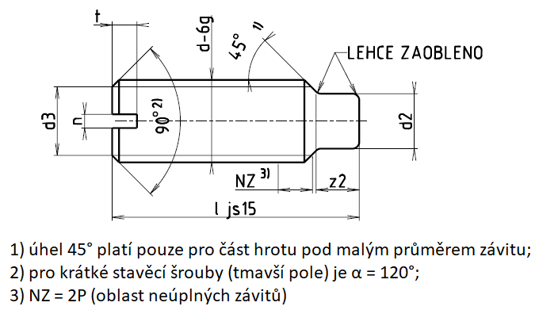

Příklad označení stavěcího šroubu se závitem M5, délky l=20 mm, pevnostní třídy 14H:
STAVĚCÍ ŠROUB ISO 7435 – M5×20 – 14H
| Závit d | M1,2 | M1,6 | M2 | M2,5 | M3 | (M3,5) | M4 | M5 | M6 | M8 | M10 | M12 |
|---|---|---|---|---|---|---|---|---|---|---|---|---|
| d5-h14 | 0,8 | 1 | 1,5 | 2 | 2,2 | 2,5 | 3,5 | 4 | 5,5 | 7 | 8,8 | |
| d3 | = malému průměru závitu d3 | |||||||||||
| n | 0,2 | 0,25 | 0,25 | 0,4 | 0,4 | 0,5 | 0,6 | 0,8 | 1 | 1,2 | 1,6 | 2 |
| nmin. | 0,26 | 0,31 | 0,31 | 0,46 | 0,46 | 0,56 | 0,66 | 0,86 | 1,06 | 1,26 | 1,66 | 2,06 |
| nmax. | 0,4 | 0,45 | 0,45 | 0,6 | 0,6 | 0,7 | 0,8 | 1 | 1,2 | 1,51 | 1,91 | 2,31 |
| tmin. | 0,4 | 0,56 | 0,64 | 0,72 | 0,8 | 0,96 | 1,12 | 1,28 | 1,6 | 2,0 | 2,4 | 2,8 |
| tmax. | 0,52 | 0,74 | 0,84 | 0,95 | 1,05 | 1,21 | 1,42 | 1,63 | 2,0 | 2,5 | 3,0 | 3,6 |
| z2+IT14 | 1 | 1,25 | 1,5 | 1,75 | 2 | 2,5 | 3 | 4 | 5 | 6 | ||
| Závit d | M1,6 | M2 | M2,5 | M3 | (M3,5) | M4 | M5 | M6 | M8 | M10 | M12 |
|---|---|---|---|---|---|---|---|---|---|---|---|
| Délka l | Přibližná hmotnost 1000 šroubů [g] | Přibližná hmotnost jednoho šroubu [g] | |||||||||
| 2,5 | 23 | ||||||||||
| 3 | 29 | 40 | |||||||||
| 4 | 41 | 58 | 93 | ||||||||
| 5 | 52 | 77 | 123 | 180 | 228 | ||||||
| 6 | 64 | 96 | 153 | 224 | 287 | 355 | |||||
| 8 | 87 | 133 | 213 | 312 | 406 | 510 | 788 | 1050 | |||
| 10 | 170 | 273 | 401 | 526 | 665 | 1040 | 1400 | 2,43 | |||
| 12 | 333 | 489 | 645 | 820 | 1280 | 1760 | 3,07 | 4,57 | |||
| 14 | 577 | 764 | 975 | 1530 | 2110 | 3,71 | 5,58 | 7,81 | |||
| 16 | 665 | 883 | 1130 | 1780 | 2460 | 4,35 | 6,58 | 9,27 | |||
| 20 | 1121 | 1440 | 2270 | 3170 | 5,62 | 8,59 | 12,18 | ||||
| 25 | 2890 | 4050 | 7,21 | 11,10 | 15,81 | ||||||
| 30 | 4930 | 8,81 | 13,61 | 19,45 | |||||||
| 35 | 10,40 | 16,13 | 23,09 | ||||||||
| 40 | 11,99 | 18,64 | 26,73 | ||||||||
| 45 | 21,15 | 30,36 | |||||||||
| 50 | 23,66 | 34,00 | |||||||||
| 55 | 37,69 | ||||||||||
| 60 | 41,33 | ||||||||||